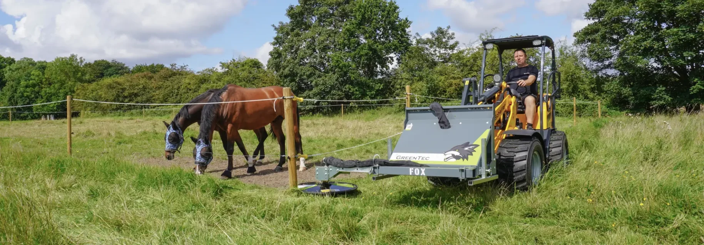

Orchard Hedging & Mulching
GreenTec Quadsaws and Cutterbars for mechanical hedging and topping — mounted on the machine you already run.
GreenTec Quadsaw
Circular saw blades on a rotating head. They cut through the wood an orchard actually carries — old scaffold limbs, thick laterals, stub-back cuts — at travel speed, and leave a clean cut face that heals rather than a shredded stub. Four working widths, four blade counts, one head that mounts across most farm machines.
The compact head for narrow rows and lighter carriers.
View →The usual starting point where row spacing is tight but the wood is real.
View →More wall per pass and more capacity — the mid-range workhorse.
View →Tall walls and heavy resets, on a carrier with the capacity for it.
View →Where extra cutting width and productivity is required, a GreenTec Twinsaw gives you double the width with the same blade technology — the only limitation is whether you have a vehicle large enough to run it.
GreenTec Cutterbars
A cutter bar’s shearing cut can be more suitable in crops with light, leafy material. Its side-to-side cutting motion, as opposed to a Quadsaw’s spinning motion, is what makes the difference — depending on the material. If price is a big part of the equation the cutter bar is a far more cost-effective solution; whether you order an HL or an HS series depends on whether you need 40 mm or 60 mm cutting capacity. We have many macadamia, cherry and stone fruit growers who love this solution.
HL is the lighter bar — less weight out on the carrier, ideal for annual passes on soft regrowth. HS is built heavier for harder, thicker growth and longer seasons on the machine. Both run in lengths from about 1.5 m to 2.4 m, so the decision is duty first, length second.
Quadsaw or Cutterbar?
Wood diameter and how often the block is hedged decide it. Everything else — mounting, carrier, hydraulics — is common to both.
| Quadsaw | Cutterbar | |
|---|---|---|
| Cuts | Wood — up to 210 mm depending on model | Leafy regrowth up to 60 mm depending on the model |
| Cut quality | Clean sawn face | Clean shearing cut, very little throw |
| Best for | Mangoes, avocados, macadamias, pecans, olives, cherries, apples, pears, almonds | Macadamias, pecans, cherries, apples, pears, almonds |
| Working widths | 1.4 · 1.6 · 2.0 · 2.4 m | 1.52, 1.82, 2.12, 2.42 m (HL) · 1.72, 2.12, 2.42 m (HS) |
| Side discharge | Set up for topping, a Quadsaw effectively side discharges a large amount of material | No side discharge ability |
| Mounting | Multi Carrier, reach arm, telehandler, excavator, loader, skid steer | Same carrier frames as the saw |
| Most orchards buy | First | A few orchards buy this if their material is consistently small and leafy |
Mount It on the Machine You Already Own
Both the Quadsaw and the Cutterbar are head units — what changes is the carrier frame that holds them and where the oil comes from. A PUMA Multi Carrier mounts to a front-end loader, telehandler, wheel loader or skid steer and runs off that machine’s hydraulics. Pick your machine and we will show you the mounting path. The other option is a reach arm, which can also run off the tractor hydraulics or be ordered with its own in-built power pack driven from the tractor PTO.
Tractor with GreenTec Multi Carrier
The Multi Carrier (PUMA) is the frame that turns a tractor into a hedging machine. It mounts to the tractor’s front-end loader — not the three-point linkage — carries the saw or the bar out past the wheels, and runs off the vehicle’s hydraulics. PUMA covers 2303 through 3303, plus Tele versions that telescope the head in close to the machine for side trimming in tight rows.
Virnig V70 Drum Mulcher
For processing what the saw cuts down, and for taking out old blocks and stumps.
An 18" balanced Quadco® drum progressively cuts and reprocesses material, producing a fine residual mulch that can be left in the inter-row. Rolled forward on the skid shoes it mulches 51 mm below grade, so removed trees and stumps go in the same pass. Every unit is factory tuned to the loader for correct drum RPM.
It is the only mulcher we recommend for orchard work — and it needs a genuine 90+ hp high-flow skid steer at 114–190 L/min. Below that, it is the wrong tool and we will tell you so.

GreenTec RI 82 Barrier Mower
Built to mow past obstacles without stopping. The 0.8 m three-blade head runs on a spring-loaded arm: it deflects around each trunk, post or trellis leg and returns behind it, so the under-tree strip gets mown in one continuous pass instead of a pass plus a hand crew.
It is the only mower we put on this page — for orchard work the in-row strip is the problem worth solving, and a wide slasher does not solve it.

See It Cutting
Proven in the Rows
Grower and machine in the row — saw at the cut face, hedged rows running away behind.
Tell Us About Your Orchard
Crop, row spacing, the wood you are cutting and the machine you want it on. We come back with the head, the carrier frame and a price.
Or call 07 5315 8020Orchard Hedging & Mulching — Technical Detail
Owning the machine means owning the timing
The biggest gain from buying your own hedging gear is not the hourly rate — it is control of the calendar. When the machine is in your shed you hedge on the day the block calls for it: lightening a heavy bud set, opening the canopy ahead of a spray, pulling the wall back before harvest access. You are no longer third in line behind a contractor’s run sheet, a weather-delayed schedule or a window that closes before anyone turns up.
That timing is what turns pruning from a cost line into a production decision. Cut at the right point in the crop’s cycle and you influence bud set, light into the canopy, fruit size and quality. Cut three weeks late because that was the only slot available and you carry the compromise all season. Owning the head also means a light second pass is possible when it is warranted, instead of one heavy catch-up cut a year.
Why growers mechanise hedging
Hand pruning a block is limited by the crew you can find and the window you have. Mechanical hedging changes the economics: a single operator on a tractor covers rows per hour instead of trees per hour, and the pass happens when the crop needs it rather than when labour is available.
It also makes the block consistent. A machine cuts to the same plane every row, which keeps light into the canopy, keeps the row width predictable for spraying and harvesting, and stops the gradual encroachment that eventually forces a hard reset. Most growers still hand-finish selectively — mechanical hedging sets the wall, people deal with the exceptions.
Sizing the head to the carrier
The longest head is not automatically the right one. A saw or bar hanging out in front of a machine is leverage: it changes the front axle load, the stability on a slope and how the machine behaves at the end of the row. We size the head against the carrier, not the catalogue.
What matters is lift capacity at the reach you actually work, hydraulic flow and pressure at the head, and the height you want to cut in one pass. Head width is not a row-spacing question — spacing decides whether you need a Tele frame, which telescopes the head in close to the vehicle so you can side trim in tight orchards. Where the canopy is taller than the head, a reach arm, a Tele frame or an excavator is the better answer than an oversized head on a light machine.
Cut quality and tree health
A sharp circular blade cuts wood cleanly and leaves a face that seals. A blunt blade, or a tool being asked to cut wood beyond its capacity, tears and crushes instead — and that is what invites dieback and disease into the cut.
Practically, cut quality comes down to blade condition, travel speed matched to the material load, taking a sensible amount at once, and timing the pass in your crop’s production cycle. Getting these right is the difference between mechanical hedging that improves a block year on year and a pass that sets it back.
What to do with the cut material
The cutter bar leaves the material where it falls; when top hedging an orchard with a Quadsaw, most of the cut material is discharged into the centre of the row. In annually hedged blocks the volume is usually light enough to mulch or slash with what you already own, and the residue goes back into the inter-row.
Where you are catching up after a few seasons, or pulling trees out, the volume and diameter change the job. That is where the Virnig V70 Drum Mulcher earns its place — it reprocesses material into a fine mulch and, rolled forward on the skid shoes, takes stumps 51 mm below grade. It is a 90+ hp high-flow skid steer attachment, and nothing smaller will run it properly.
Common Questions